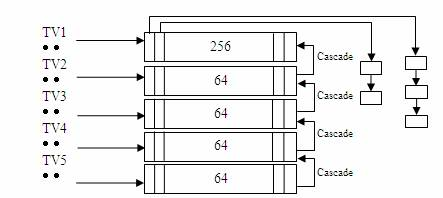

本文是转载摘录Linux 时钟管理，原文非常详尽且专业，建议阅读原文
Linux 中的定时器
在 Linux 内核中主要有两种类型的定时器。一类称为 timeout 类型，另一类称为 timer 类型:
timeout类型的定时器通常用于检测各种错误条件，例如用于检测网卡收发数据包是否会超时的定时器，IO设备的读写是否会超时的定时器等等。通常情况下这些错误很少发生，因此，使用timeout类型的定时器一般在超时之前就会被移除，从而很少产生真正的函数调用和系统开销。总的来说，使用timeout类型的定时器产生的系统开销很小。此外，在使用timeout类型定时器的地方往往并不关心超时处理，因此超时精确与否，早 0.01 秒或者晚 0.01 秒并不十分重要。timer类型的定时器与timeout类型的定时器正相反，使用timer类型的定时器往往要求在精确的时钟条件下完成特定的事件，通常是周期性的并且依赖超时机制进行处理。例如设备驱动通常会定时读写设备来进行数据交互。如何高效的管理timer类型的定时器对提高系统的处理效率十分重要。
内核需要进行时钟管理，离不开底层的硬件支持。在早期是通过 8253 芯片提供的 PIT（Programmable Interval Timer）来提供时钟，但是 PIT 的频率很低，只能提供最高 1ms 的时钟精度，由于 PIT 触发的中断速度太慢，会导致很大的时延，对于像音视频这类对时间精度要求更高的应用并不足够，会极大的影响用户体验。随着硬件平台的不断发展变化，陆续出现了 TSC（Time Stamp Counter），HPET（High Precision Event Timer），ACPI PM Timer（ACPI Power Management Timer），CPU Local APIC Timer 等精度更高的时钟。这些时钟陆续被 Linux 的时钟子系统所采纳，从而不断的提高 Linux 时钟子系统的性能和灵活性。
Timer wheel
在 Linux 2.6.16 之前，内核一直使用一种称为 timer wheel 的机制来管理时钟。这就是熟知的 kernel 一直采用的基于 HZ 的 timer 机制。

在 timer wheel 的框架下，所有系统正在使用的 timer 并不是顺序存放在一个平坦的链表中，因为这样做会使得查找，插入，删除等操作效率低下。Timer wheel 提供了 5 个 timer 数组，数组之间存在着类似时分秒的进位关系。TV1 为第一个 timer 数组，其中存放着从 timer_jiffies（当前到期的 jiffies）到 timer_jiffies + 255 共 256 个 tick 对应的 timer list。因为在一个 tick 上可能同时有多个 timer 等待超时处理，timer wheel 使用 list_head 将所有 timer 串成一个链表，以便在超时时顺序处理。TV2 有 64 个单元，每个单元都对应着 256 个 tick，因此 TV2 所表示的超时时间范围从 timer_jiffies + 256 到 timer_jiffies + 256 * 64 – 1。依次类推 TV3，TV4，TV5。以 HZ=1000 为例，每 1ms 产生一次中断，TV1 就会被访问一次，但是 TV2 要每 256ms 才会被访问一次，TV3 要 16s，TV4 要 17 分钟，TV5 甚至要 19 小时才有机会检查一次。最终，timer wheel 可以管理的最大超时值为 2^32。一共使用了 512 个 list_head（256+64+64+64+64）。如果 CONFIG_BASE_SMALL 定义为 1，则最终使用的 list_head 个数为 128 个（64+16+16+16+16），占用的内存更少，更适合嵌入式系统使用。
timer wheel 的实现机制的弊端：
- cascade 开销过大。在极端的条件下，同时会有多个 TV 需要进行 cascade 处理，会产生很大的时延。这也是为什么说 timeout 类型的定时器是 timer wheel 的主要应用环境，或者说 timer wheel 是为 timeout 类型的定时器优化的。因为 timeout 类型的定时器的应用场景多是错误条件的检测，这类错误发生的机率很小，通常不到超时就被删除了，因此不会产生 cascade 的开销。
- 由于 timer wheel 是建立在 HZ 的基础上的，因此其计时精度无法进一步提高。毕竟一味的通过提高 HZ 值来提高计时精度并无意义，结果只能是产生大量的定时中断，增加额外的系统开销。
- timer wheel 的实现与 jiffies 的耦合性太强，非常不便于扩展。
常用的基本概念
- 时钟源设备（clock-source device）
系统中可以提供一定精度的计时设备都可以作为时钟源设备。如 TSC，HPET，ACPI PM-Timer，PIT 等。但是不同的时钟源提供的时钟精度是不一样的。像 TSC，HPET 等时钟源既支持高精度模式（high-resolution mode）也支持低精度模式（low-resolution mode），而 PIT 只能支持低精度模式。此外，时钟源的计时都是单调递增的（monotonically），如果时钟源的计时出现翻转（即返回到 0 值），很容易造成计时错误， 内核的一个 patch（commit id: ff69f2）就是处理这类问题的一个很好示例。时钟源作为系统时钟的提供者，在可靠并且可用的前提下精度越高越好。在 Linux 中不同的时钟源有不同的 rating，具有更高 rating 的时钟源会优先被系统使用。
时钟源中 rating 的定义
| 1 ~ 99 | 100 ~ 199 | 200 ~ 299 | 00 ~ 399 | 400 ~ 499 |
|---|---|---|---|---|
| 非常差的时钟源，只能作为最后的选择。如 jiffies | 基本可以使用但并非理想的时钟源。如 PIT | 正确可用的时钟源。如 ACPI PM Timer，HPET | 快速并且精确的时钟源。如 TSC | 理想时钟源。如 kvm_clock，xen_clock |
- 时钟事件设备（clock-event device）
系统中可以触发 one-shot（单次）或者周期性中断的设备都可以作为时钟事件设备。如 HPET，CPU Local APIC Timer 等。HPET 比较特别，它既可以做时钟源设备也可以做时钟事件设备。时钟事件设备的类型分为全局和 per-CPU 两种类型。全局的时钟事件设备虽然附属于某一个特定的 CPU 上，但是完成的是系统相关的工作，例如完成系统的 tick 更新；per-CPU 的时钟事件设备主要完成 Local CPU 上的一些功能，例如对在当前 CPU 上运行进程的时间统计，profile，设置 Local CPU 上的下一次事件中断等。和时钟源设备的实现类似，时钟事件设备也通过 rating 来区分优先级关系。
- tick device
Tick device 用来处理周期性的 tick event。Tick device 其实是时钟事件设备的一个 wrapper，因此 tick device 也有 one-shot 和周期性这两种中断触发模式。每注册一个时钟事件设备，这个设备会自动被注册为一个 tick device。全局的 tick device 用来更新诸如 jiffies 这样的全局信息，per-CPU 的 tick device 则用来更新每个 CPU 相关的特定信息。
- broadcast
Broadcast 的出现是为了应对这样一种情况：假定 CPU 使用 Local APIC Timer 作为 per-CPU 的 tick device，但是某些特定的 CPU（如 Intel 的 Westmere 之前的 CPU）在进入 C3+ 的状态时 Local APIC Timer 也会同时停止工作，进入睡眠状态。在这种情形下 broadcast 可以替代 Local APIC Timer 继续完成统计进程的执行时间等有关操作。本质上 broadcast 是发送一个 IPI（Inter-processor interrupt）中断给其他所有的 CPU，当目标 CPU 收到这个 IPI 中断后就会调用原先 Local APIC Timer 正常工作时的中断处理函数，从而实现了同样的功能。目前主要在 x86 以及 MIPS 下会用到 broadcast 功能。
- Timekeeping & GTOD (Generic Time-of-Day)
Timekeeping（可以理解为时间测量或者计时）是内核时间管理的一个核心组成部分。没有 Timekeeping，就无法更新系统时间，维持系统“心跳”。GTOD 是一个通用的框架，用来实现诸如设置系统时间 gettimeofday 或者修改系统时间 settimeofday 等工作。为了实现以上功能，Linux 实现了多种与时间相关但用于不同目的的数据结构。
时钟源设备和时钟事件设备的引入，将原本放在各个体系结构中重复实现的冗余代码封装到各自的抽象层中，这样做不但消除了原来 timer wheel 与内核其他模块的紧耦合性，更重要的是系统可以在运行状态动态更换时钟源设备和时钟事件设备而不影响系统正常使用，譬如当 CPU 由于睡眠要关闭当前使用的时钟源设备或者时钟事件设备时系统可以平滑的切换到其他仍处于工作状态的设备上。Timekeeping/GTOD 在使用时钟源设备的基础上也采用类似的封装实现了体系结构的无关性和通用性。hrtimer 则可以通过 timekeeping 提供的接口完成定时器的更新，通过时钟事件设备提供的事件机制，完成对 timer 的管理。
还有一个重要的模块就是 tick device 的抽象，尤其是 dynamic tick。Dynamic tick 的出现是为了能在系统空闲时通过停止 tick 的运行以达到降低 CPU 功耗的目的。使用 dynamic tick 的系统，只有在有实际工作时才会产生 tick，否则 tick 是处于停止状态。
- hrtimer 的实现机制
hrtimer 是建立在 per-CPU 时钟事件设备上的，对于一个 SMP 系统，如果只有全局的时钟事件设备，hrtimer 无法工作。因为如果没有 per-CPU 时钟事件设备，时钟中断发生时系统必须产生必要的 IPI 中断来通知其他 CPU 完成相应的工作，而过多的 IPI 中断会带来很大的系统开销，这样会令使用 hrtimer 的代价太大，不如不用。为了支持 hrtimer，内核需要配置 CONFIG_HIGH_RES_TIMERS=y。hrtimer 有两种工作模式：低精度模式（low-resolution mode）与高精度模式（high-resolution mode）。虽然 hrtimer 子系统是为高精度的 timer 准备的，但是系统可能在运行过程中动态切换到不同精度的时钟源设备，因此，hrtimer 必须能够在低精度模式与高精度模式下自由切换。由于低精度模式是建立在高精度模式之上的，因此即便系统只支持低精度模式，部分支持高精度模式的代码仍然会编译到内核当中。
- Deferrable timers & round jiffies
在内核中使用的某些 legacy timer 对于精确的超时值并不敏感，早一点或者晚一点执行并不会产生多大的影响，因此，如果可以把这些对时间不敏感同时超时时间又比较接近的 timer 收集在一起执行，可以进一步减少 CPU 被唤醒的次数，从而达到节能的目地。这正是引入 Deferrable timers 的目地。如果一个 timer 可以被短暂延时，那么可以通过调用 init_timer_deferrable 设置 defer 标记，从而在执行时灵活选择处理方式。不过，如果这些 timers 都被延时到同一个时间点上也不是最优的选择，这样同样会产生 lock 竞争以及 cache-line 的问题。因此，即便将 defer timers 收集到一起，彼此之间也必须稍稍错开一些以防止上述问题。这正是引入 round_jiffies 函数的原因。虽然这样做会使得 CPU 被唤醒的次数稍多一些，但是由于间隔短，CPU 并不会进入很深的睡眠，这个代价还是可以接受的。由于 round_jiffies 需要在每次更新 timer 的超时值（mod_timer）时被调用，显得有些繁琐，因此又出现了更为便捷的 round jiffies 机制，称为 timer slack。Timer slack 修改了 timer_list 的结构定义，将需要偏移的 jiffies 值保存在 timer_list 内部，通过 apply_slack 在每次更新 timer 的过程中自动更新超时值。
Dynamic tick & tickless
在 dynamic tick 引入之前，内核一直使用周期性的基于 HZ 的 tick。传统的 tick 机制在系统进入空闲状态时仍然会产生周期性的中断，这种频繁的中断迫使 CPU 无法进入更深的睡眠。如果放开这个限制，在系统进入空闲时停止 tick，有工作时恢复 tick，实现完全自由的，根据需要产生 tick 的机制，可以使 CPU 获得更多的睡眠机会以及更深的睡眠，从而进一步节能。dynamic tick 的出现，就是为彻底替换掉周期性的 tick 机制而产生的。周期性运行的 tick 机制需要完成诸如进程时间片的计算，更新 profile，协助 CPU 进行负载均衡等诸多工作，这些工作 dynamic tick 都提供了相应的模拟机制来完成。
timer 子系统的初始化过程
系统刚上电时，需要注册 IRQ0 时钟中断，完成时钟源设备，时钟事件设备，tick device 等初始化操作并选择合适的工作模式。由于刚启动时没有特别重要的任务要做，因此默认是进入低精度 + 周期 tick 的工作模式，之后会根据硬件的配置（如硬件上是否支持 HPET 等高精度 timer）和软件的配置（如是否通过命令行参数或者内核配置使能了高精度 timer 等特性）进行切换。在一个支持 hrtimer 高精度模式并使能了 dynamic tick 的系统中，第一次发生 IRQ0 的软中断时 hrtimer 就会进行从低精度到高精度的切换，然后再进一步切换到 NOHZ 模式。
在系统运行的过程中，可以通过查看 /proc/timer_list 来显示系统当前配置的所有时钟的详细情况，譬如当前系统活动的时钟源设备，时钟事件设备，tick device 等。也可以通过查看 /proc/timer_stats 来查看当前系统中所有正在使用的 timer 的统计信息。包括所有正在使用 timer 的进程，启动 / 停止 timer 的函数，timer 使用的频率等信息。内核需要配置 CONFIG_TIMER_STATS=y，而且在系统启动时这个功能是关闭的，需要通过如下命令激活"echo 1 >/proc/timer_stats"。/proc/timer_stats 的显示格式如下所示：
<count>, <pid> <command> <start_func> (<expire_func>)
总结
随着应用环境的改变，使用需求的多样化，Linux 的时钟子系统也在不断的衍变。为了更好的支持音视频等对时间精度高的应用，Linux 提出了 hrtimer 这一高精度的时钟子系统，为了节约能源，Linux 改变了长久以来一直使用的基于 HZ 的 tick 机制，采用了 tickless 系统。即使是在对硬件平台的支持上，也是在不断改进。举例来说，由于 TSC 精度高，是首选的时钟源设备。但是现代 CPU 会在系统空闲时降低频率以节约能源，从而导致 TSC 的频率也会跟随发生改变。这样会导致 TSC 无法作为稳定的时钟源设备使用。随着新的 CPU 的出现，即使 CPU 的频率发生变化，TSC 也可以一直维持在固定频率上，从而确保其稳定性。在 Intel 的 Westmere 之前的 CPU 中，TSC 和 Local APIC Timer 类似，都会在 C3+ 状态时进入睡眠，从而导致系统需要切换到其他较低精度的时钟源设备上，但是在 Intel Westmere 之后的 CPU 中，TSC 可以一直保持运行状态，即使 CPU 进入了 C3+ 的睡眠状态，从而避免了时钟源设备的切换。在 SMP 的环境下，尤其是 16-COREs，32-COREs 这样的多 CPU 系统中，每个 CPU 之间的 TSC 很难保持同步，很容易出现“Out-of-Sync”。如果在这种环境下使用 TSC，会造成 CPU 之间的计时误差，然而在 Intel 最新的 Nehalem-EX CPU 中，已经可以确保 TSC 在多个 CPU 之间保持同步，从而可以使用 TSC 作为首选的时钟源设备。由此可见，无论是现在还是将来，只要有需要，内核的时钟子系统就会一直向前发展。
参考
- Linux时钟管理 本文就是从这篇IBM developerWorks转载而来，建议阅读原文更为详尽
- 也可以参考我翻译的VMware虚拟机的计时